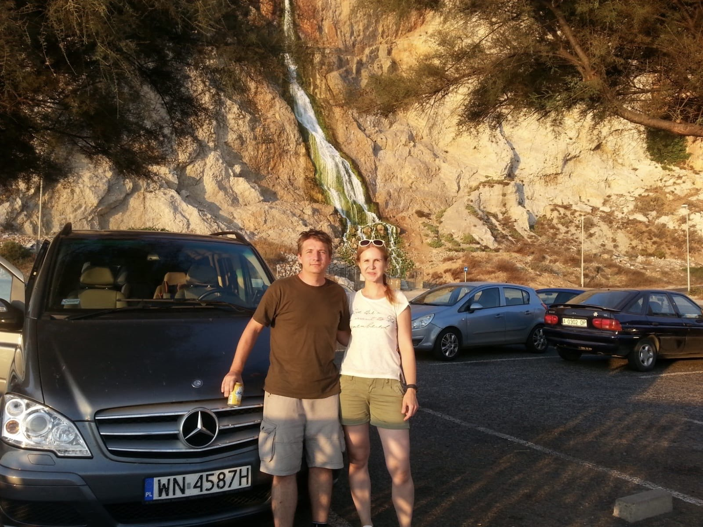

A professional portfolio showcasing skills, thoughts, and personal brand development.
Reflections on daily life and learning progress.
Writing a little bit every day has drastically changed my fluency. Today I want to reflect on how small habits build long-term success...
Read Full Post →A quick dive into the vocabulary used in sci-fi masterpieces. The cinematography was breathtaking...
Read Full Post →My analytical voice on current global events.
An analysis of recent articles discussing how artificial intelligence is reshaping entry-level jobs...
Read Full Analysis →How traditional artists are adapting to the digital era and the controversy surrounding it.
Read Full Analysis →How I use my language skills to give back to the community.
Currently using my English skills to translate documents for local NGOs. This not only builds my professional vocabulary but also allows me to contribute to society.
Helping younger students with their English homework and conversational skills. Explaining complex grammar rules to others is the best way to master them myself.
Creating English subtitles for local educational creators and charity campaigns. It's a great exercise in listening comprehension and precise localization.
My life goals structured in a digital collage.
Click on the images to view my inspirations.

Curated advanced vocabulary. Automatically updated every midnight.